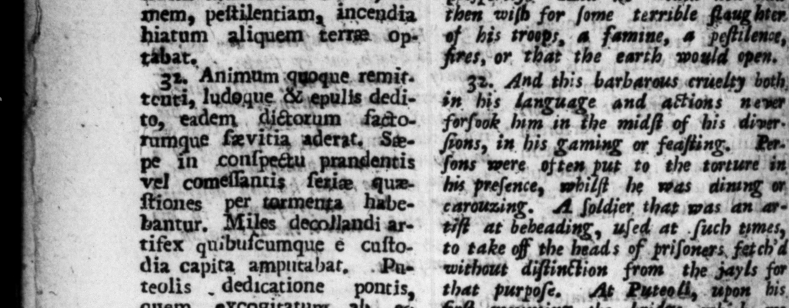

*% . G sUBET TAN M e Queai etiam palam de 24 2 uſed » too o | achat 1 aul[zs calami- che NE EE: s publicis Snfigairentur. 4 7 e — 22 . won wiſh for ſome terrible his 15 amine, — a 5, * 2.2 - 2 , 3% Animum ©. remit And this barbaraus cruelty tenri, ludoque & pulls dedi- in 3 e and action; 1 — to, eadem gs ma facto- forſook 485 in he midſt of his diu. rumque wed — aderat, Sæ- Ene, in his gaming or feaſting, Rparent | ut to the torture in ſtiones 8 bantur. decollandi artifex quibuicumque e cuſto1 dia capita amputabat, .\Pu"= teolis _ dedicatione * — excogitatum ab nificavimus, cum — : ittore invitaſſet ad fe, rePTE: „ N ha ve — 2 5 notice he which wy F pente omnes præcipitavit. ö ? Quoſdam gubernacula ap- s threw SY ek long Into the prehendentes, contis remiſqʒ — Some that got hold of the rut. ©, detrafit in mare. Rome ders of the Ships he thruſt down with 1 publico epulo fervum ob es 1 7 725 the 4, 1. Rome, detractam leftis argenteam in a publick f ve ſtole laminam, carnifici chnfeſtim 4 little ſil yer 2 the beds, | tradidit, ut — — abſeiſſis, verd him immediately ta an à collo pen- oner, 5 orders to cut > has dentibus, pracedente titulo and to lead bim — canſam pea indicaret, s with 2 — ccetus ane ciroum- neck "Gefora duceretur, Mirmiflonem e 77 ing the 1 judo rudibus ſecum batuenrem, & ſponte proſtratum, bing and unter con ferrea ſica, ac more oy hag abb then run about try. | after the manner of ſe. SE T Let 1 „ i Bhi victorum cum palma diſcur altaribus wie. tima, ſuccinctus m bitu, elato 2 cul» trarium mactavit. Lantiore convivio effuſus fabito in Pepe, and cachinnos, COSS, qui juxta time, at laſt i cubabant, quidnam yiclever blande 222 — ”— RY
